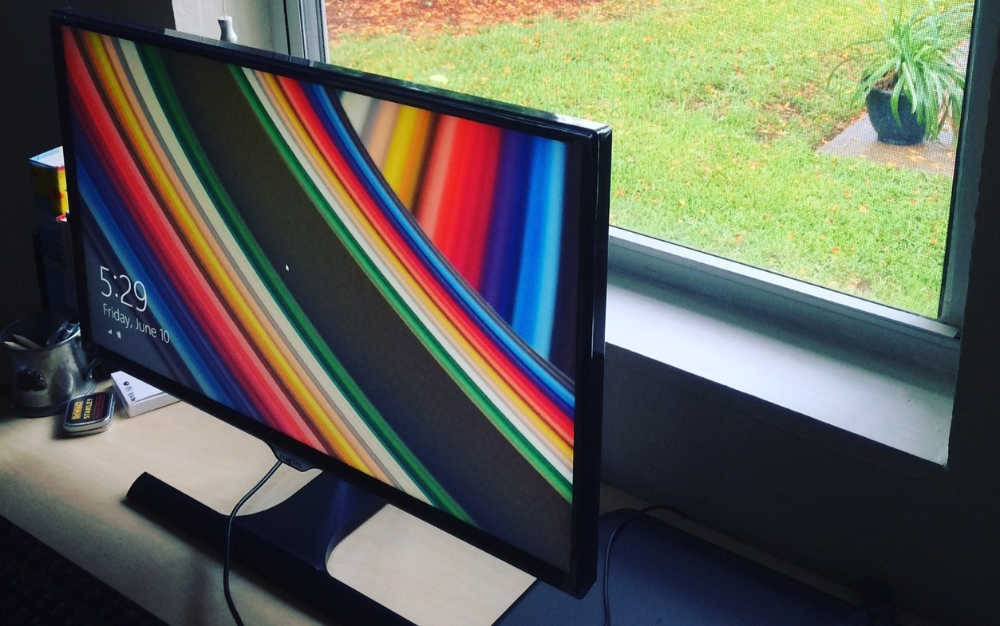

Stack

These are the tools I'm currently using for web development:
- Computer: Toshiba Satellite C55 (less than $300 at any store in the US). I also have an older Toshiba Satellite that I use to experiment: recently, I wiped out the hard drive and installed Ubuntu.
- Operating System: Windows 8.1
- Terminal Emulator: Git Bash (Linux terminal emulator that comes with Git for Windows).
- Static Site Generator: Metalsmith, a simple, pluggable static site generator made with JavaScript.
- Responsive Framework: Skeleton.
- Icon Toolkit: Font Awesome and Font Mfizz.
- Version Control: Git.
- Text Editor: Visual Studio Code.
- Image Bank: Pixabay.
- Hosting: Github Pages.
- Cloud Server: Digital Ocean virtual private servers (VPS).
The basic workflow I follow to update this site goes like this:
- Write posts or page content in Markdown.
- Go to the root folder of my project:
/ and run Metalsmith: npm start. This converts the markdown files to HTML and saves the updated site in the /public folder.
- Git commit the changes in the
/ root folder and in the /public folder: git add --all and git commit -m "made some changes".
- Push the source files in the
/ folder and the HTML site in the /public folder to Github: git push origin master.
- Open my browser and check that the site looks fine. If something is off, fix it and go back to #2.